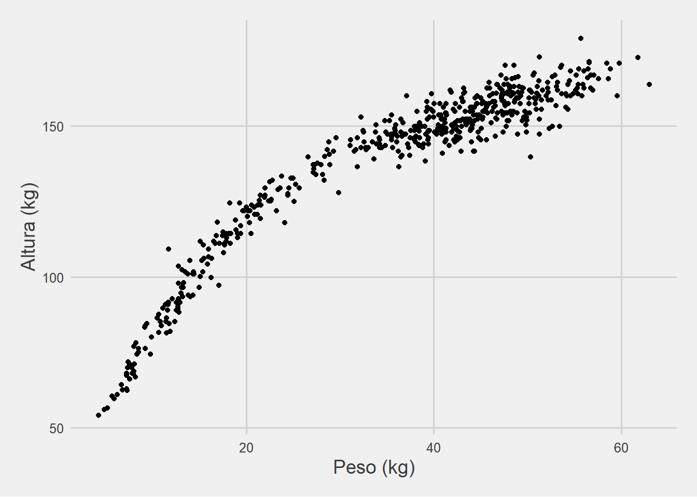
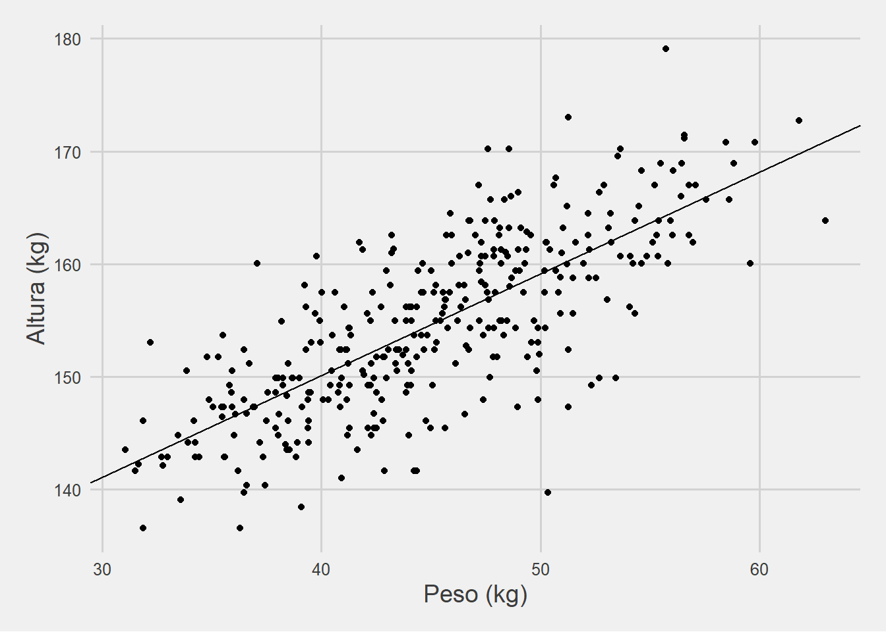
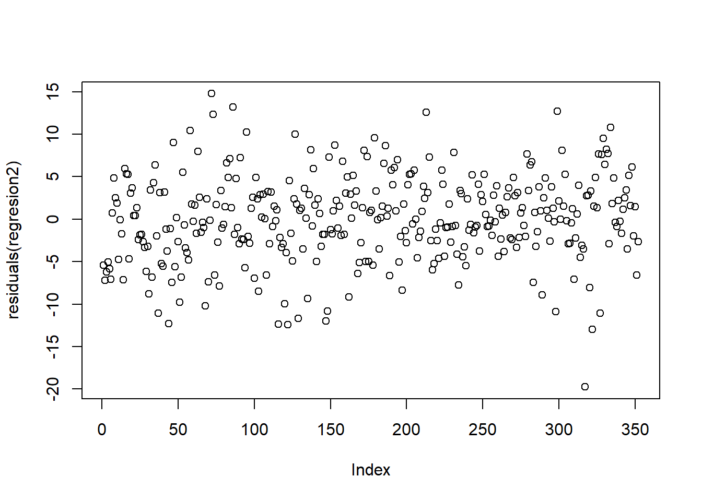
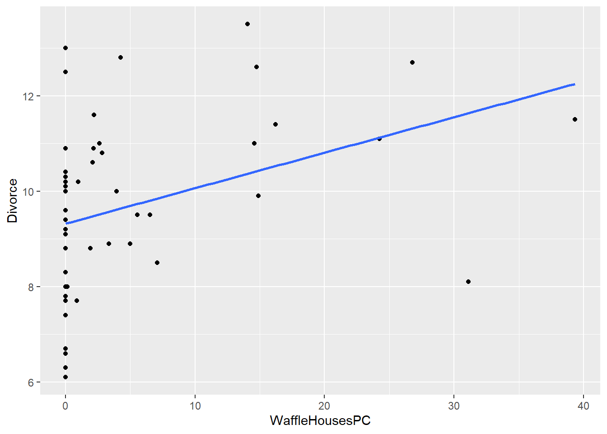
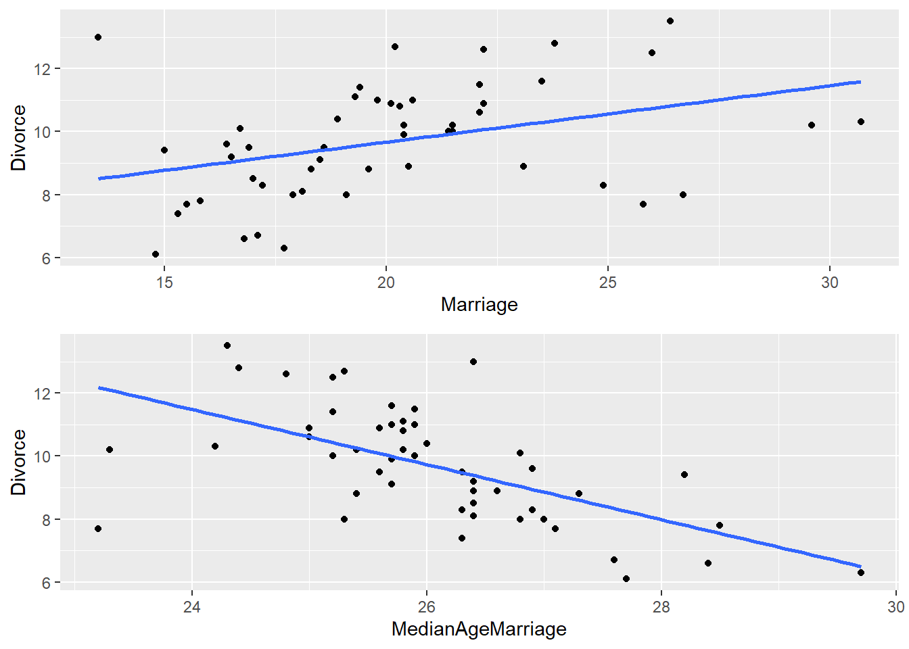
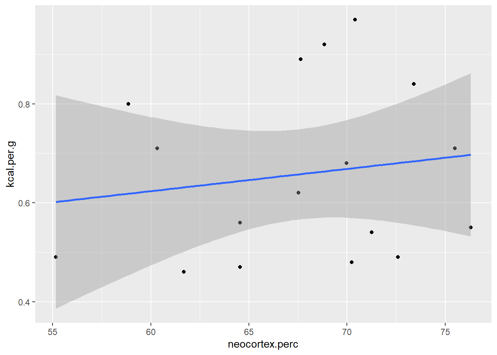
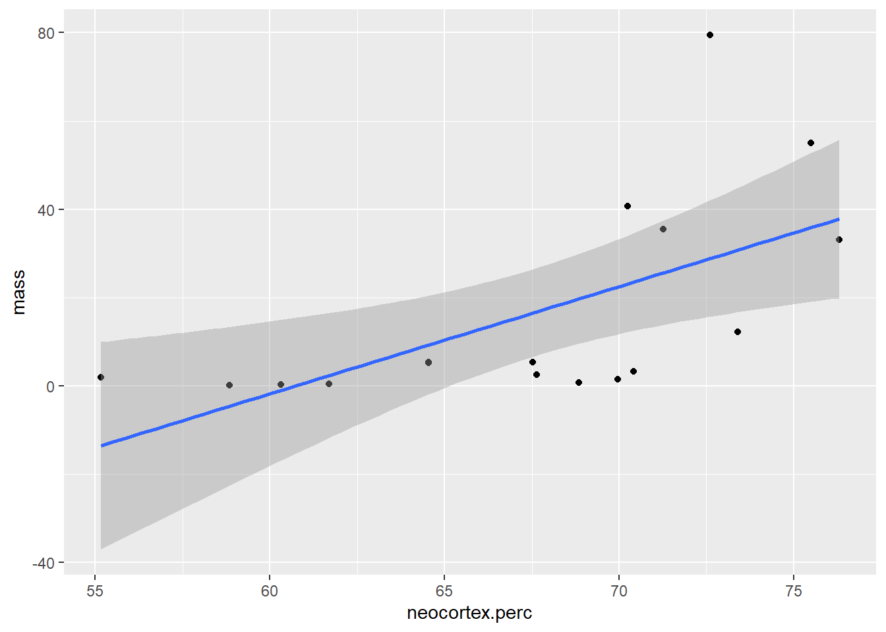

6 El automovil de la estadistica
Al terminar este capítulos ustedes van a poder:
- Entender la mecánica de la Regresión Lineal
- Poder estimar Regresiones Lineales simples y múltiples en R
- Interpretar los coeficientes de los modelos y su incertidumbre
- Comprender algunos de los límites de la Regresión Lineal Múltiple El objetivo de este capítulo es introducir a uno de los métodos más clásicos del análisis de datos: la regresión. Tal es así que es popularmente conocido como “el automóvil de la estadística” o, como dice Walter Sosa Escudero, “Los Rolling Stones” del análisis de datos. Veremos para qué puede servirnos y cómo funciona
6.1 ¿Cuál es la relación entre la altura y el peso de las personas?
Imaginen que tienen la siguiente pregunta: ¿Cuál es la relación entre la altura de una persona y su peso? Esta es solo una de las muchas preguntas que nos podemos hacer, pero es representativa de lo que la regresión puede hacer por nosotros (o de lo que nosotros podemos hacer con su ayuda). Descarguen desde aquí los datos con los que trabajaremos la primera parte de la clase:
load(url('https://github.com/datalab-UTDT/GIS2/raw/master/Data/HowellData.RData'))
str(Howell1)## 'data.frame': 544 obs. of 4 variables:
## $ height: num 152 140 137 157 145 ...
## $ weight: num 47.8 36.5 31.9 53 41.3 ...
## $ age : num 63 63 65 41 51 35 32 27 19 54 ...
## $ male : int 1 0 0 1 0 1 0 1 0 1 ...Como pueden ver luego de ejecutar el comando “str”, Howell1 es un data.frame que contiene 544 observaciones en cuatro variables: height (altura), weight (peso), age (edad) y male (genero). Todas son variables numéricas, incluyendo male, que toma valor 1 cuando la observación pertenece a un hombre y 0 cuando es a una mujer. Recordemos nuestra primera pregunta ¿Cuál es la relación entre la altura y y el peso? Creo que todos haríamos lo mismo de una manera intuitiva: grafiquemos la relación entre ambas variables.
Haremos este gráfico con la ayuda de ggplot2, el paquete principal dentro de tidyverse para hacer todo tipo de gráficos. También usaremos el paquete ggthemes, que nos permite rápidamente hacer un gráfico más estéticamente exitoso (ya introdujimos este paquete en el Capítulo 3). Para usar ggplot2() y algunos temas que nos da ggthemes() debemoso primero cargar las librerías, que es lo primero que hace el siguiente código:
# Hay que cargar las librerias
library(tidyverse)
library(ggthemes)
ggplot(Howell1) +
geom_point(aes(x=weight, y=height)) +
theme_fivethirtyeight() +
labs(x='Peso (kg)', y = 'Altura (kg)') +
theme(axis.title = element_text(size=14))
SOBRE EL GRÁFICO
Veamos un poquito el código del gráfico. Por un lado, llamo a **ggplot**, que es mi manera de decirle que quiero hacer un gráfico, y le paso el data.frame desde donde usará los datos. Luego, usando un **+**, le decimos qué tipo de gráfico queremos que haga: un scatterplot (dispersión de puntos), **geom_point**. Pero ahí mismo tenemos que indicarle cual columna irá en la el eje x (horizontal) y cuáles en el eje y (vertical).
Con estos elementos ya puede hacer un gráfico, si quieren ejecutenlo. Pero además quería emprolijar un poco el gráfico: con **theme_fivethirtyeight()**, del paquete **ggthemes**, podemos formatearlo como el estilo de la famosa página FiveThirtyEight. Además queremos agregarle nombres a los ejes, lo que hacemos con **labs()**, simplemente asignándole el nombre que queremos para cada uno de ellos. La última parte, ** theme(axis.title = element_text(size=14))**, es un poco más complejo pero básicamente lo que hacemos es decirle que queremos que los títulos de los ejes tengan un tamaño de 14 puntos.¿Qué ven? Definitivamente parece haber una relación positiva entre altura y peso (es decir, a mayor peso de una persona observamos una mayor altura). Sin embargo, en la primera parte pareciera que los puntos son un poco más “empinados” y hacia el final se hacen un poco más planos ¿verdad? Veamos si podemos usar a la regresión para tener una mejor idea de esta relación.
6.2 El “objetivo” de la regresión lineal
Lo que hace la regresión lineal es muy simple. Imaginen que queremos modelar la relación entre estas dos variables como una linea. Sí, sabemos que una linea no puede pasar perfectamente por todos los puntos: definitivamente va a tener que estar más cerca de algunos que de otros. Ahora bien ¿Pueden ustedes encontrar ustedes la recta que minimice la distancia entre todos los puntos? Si son honestos seguro respondieron que no, pero por suerte la regresión lo puede hacer por ustedes.
La regresión lineal puede pensarse como aquella máquina que consigue la recta que mejor ajusta a los puntos ¿Qué significa que mejor ajusta? Ya que podríamos tener distintas medidas de cuál es la distancia a minimizar. La regresión lineal usa la sumatoria de la distancia al cuadrado entre cada observación y la recta. Si todo esto parece un poco difícil, no se preocupen. Vamos a intentar dejarlo lo más claro posible.
La función que nos permite estimar regresiones lineales en R es la función lm(). Supongamos, primero, que no existe ninguna relación entre la altura y el peso. De hecho, asumamos que la altura de una persona solo puede explicarse por un único valor, que es para todos los casos el mismo. Pero antes de hacer eso, saquemos todas aquellas observaciones menores a 18 años.
Howell1Adults <- Howell1 %>% filter(age>=18)
regresion1 <- lm(data = Howell1Adults, formula = height ~ 1)Como pueden ver, la función lm necesita de dos parámetros para hacer su trabajo: los datos y una fórmula. La fórmula consiste en el lugar donde establecemos la relación entre nuestra variable dependiente (la que queremos explicar) y las independientes (las que nos explican a la variable dependiente). A la izquierda de ~ escribimos a la variable dependiente, y luego de ese símbolo ponemos las variables independientes. En nuestro caso queremos que solo nos explique la altura con una constante. Veamos que devolvió
summary(regresion1)##
## Call:
## lm(formula = height ~ 1, data = Howell1Adults)
##
## Residuals:
## Min 1Q Median 3Q Max
## -18.0721 -6.0071 -0.2921 6.0579 24.4729
##
## Coefficients:
## Estimate Std. Error t value Pr(>|t|)
## (Intercept) 154.5971 0.4127 374.6 <2e-16 ***
## ---
## Signif. codes: 0 '***' 0.001 '**' 0.01 '*' 0.05 '.' 0.1 ' ' 1
##
## Residual standard error: 7.742 on 351 degrees of freedomLa función summary nos devuelve un resumen de nuestro objeto lm. Vamos a ir viendo algunas de las líneas, pero por el momento solo nos importa la parte de “Coefficients”. Los coeficientes en una relación lineal nos dicen cual es “el cambio esperado” en la variable dependiente (la que queremos explicar) ante una variación de una unidad en nuestra variable independiente (la que usamos para explicar a la dependiente). En nuestro caso, solo le pedimos que nos calculara lo que se conoce como intercepto, que está presente para cada una de las observaciones y no cambia de valor. Por lo que, en este simple modelo, nuestro único coeficiente, que tiene un valor de 154.5971, nos dice que la recta que minimiza la distancia al cuadrado hacia cada punto de la altura tiene ese valor. Ahora hagan lo siguiente:
mean(Howell1Adults$height)## [1] 154.5971¿Qué hicimos? Calculamos el promedio de la altura, y coincidió con el coeficiente que estimó la regresión lineal ¿Por qué? Porque la regresión puede pensarse como una máquina de hacer promedios. De hecho, dado un conjunto de puntos, el promedio es la medida que minimiza las distancias al cuadrado con respecto a todos los puntos. Vayan probando si no me creen.
vector <- c(0,5,2,4,6,8,12)
promedio <- mean(vector)
sum((vector-promedio)^2)## [1] 93.42857sum((vector-(promedio+1))^2)## [1] 100.4286sum((vector-(promedio-1))^2)## [1] 100.4286sum((vector-(promedio+0.5))^2)## [1] 95.17857sum((vector-(promedio-0.5))^2)## [1] 95.178576.3 Agregando variables explicativas
Aun si el promedio es la mejor estimación de una altura cualquiera si suponemos que no hay relación entre la altura y el peso, ya sabemos que parece haber una relación positiva entre altura y peso. Vamos a modelar esto.
regresion2 <- lm(data = Howell1Adults, formula = height ~ weight)
summary(regresion2)##
## Call:
## lm(formula = height ~ weight, data = Howell1Adults)
##
## Residuals:
## Min 1Q Median 3Q Max
## -19.7464 -2.8835 0.0222 3.1424 14.7744
##
## Coefficients:
## Estimate Std. Error t value Pr(>|t|)
## (Intercept) 113.87939 1.91107 59.59 <2e-16 ***
## weight 0.90503 0.04205 21.52 <2e-16 ***
## ---
## Signif. codes: 0 '***' 0.001 '**' 0.01 '*' 0.05 '.' 0.1 ' ' 1
##
## Residual standard error: 5.086 on 350 degrees of freedom
## Multiple R-squared: 0.5696, Adjusted R-squared: 0.5684
## F-statistic: 463.3 on 1 and 350 DF, p-value: < 2.2e-16Ahora tenemos un nuevo parámetro: weight, de valor 0.91 (para redondear). También estimó el intercepto: siempre lo hará, a menos que lo indiquemos con un - 1 en alguna parte de la fórmula. Pero ahora el intercepto es un poco más bajo, no? Y qué significa weight 0.91? Significa que para cada peso adicional, nuestro modelo estima que, en promedio, la altura es 0.91 cms más alta. Gráfiquemos esto para que quedé más claro qué fue lo que pasó:
ggplot(Howell1Adults) +
geom_abline(slope = coef(regresion2)[2],intercept = coef(regresion2)[1]) +
geom_point(aes(x=weight, y=height)) +
theme_fivethirtyeight() +
labs(x='Peso (kg)', y = 'Altura (kg)') +
theme(axis.title = element_text(size=14))
Los puntos en el gráfico son los mismos de antes, pero ahora agregamos la recta de regresión que hace exactamente lo que esperábamos: pasa por el centro. Nuestro intercepto es ahora un poco más bajo (113.87939) ¿pero tiene la misma interpretación ? ¿es el valor que “arriesgaríamos” para cualquier peso?
6.3.1 Interpretación de los coeficientes (y su incertidumbre)
Ya adelantamos una interpretación provisoria de los coeficientes: el aumento esperado en la variable dependiente cuando aumentamos en una unidad el valor de nuestra variable independiente. Pero para uno de nuestros coeficientes en nuestra regresión simple, el coeficiente, esta interpretación no hace mucha justicia.
El valor del intercepto es simplementemente el valor de altura esperado cuando una persona pesa 0kgs. Sí, así como leyeron: la altura para alguien que no pesa. No le echen la culpa a la regresión, calculó una recta y, dada la pendiente, cuando el peso es cero la altura es de algo así como 113cm2.
Si miran con atención la salida del anterior summary, van a ver que además del estimate se reporta un std. error, un t. value y un Pr(>|t|). Veamos qué significa esta jerga y por qué es importante entender por qué se reportan en la salida típica de una regresión.
El standard error o error estándar de un parámetro cuantifica la incertidumbre asociada a que estamos trabajando con una muestra del proceso que genera estos datos, no con “la población completa”. Este hecho necesariamente agrega algo de incertidumbre a nuestras estimaciones ¿Si nuestros datos no son precisamente representativos del resto de las observaciones? El desvío standard es una forma conveniente de comunicar esto. En un modelo tan simple como el que estamos viendo, este error estándar depende solo de 3 variables: la cantidad de observaciones y la variabilidad de nuestra variable independiente (positivamente) y del desvió estándar de los residuos de nuestra regresión (negativamente).
Por su parte, el t. value es simplemente el estadístico que usaremos para testear qué tan probable es que, dado el error estándar y el valor del coeficiente estimado, este sea en realidad cero en términos poblacionales. El t.value es fácil de calcular; dividan el valor del parámetro y por el standard error.
Finalmente, el Pr(>|t|) es una de las salidas que más suelen abusarse cuando se hace una regresión. Lo que hace es testear el valor de nuestro t value con los valores que toma una distribución de probabilidades cuando el parámetro poblacional es en realidad 0. Si nuestro t value es muy alto / muy bajo, entonces la probabilidad de que el parámetro cero es muy baja. Si no es tan alto o bajo, entonces hay una mayor probabilidad de que el parámetro sea en realidad cero.
¿Cuál es la probabilidad con la que estamos dispuestos a aceptar que un parámetro de nuestro modelo es significativo? No existe ninguna medida absoluta que haga mejor o peor uno de estos valores. Podría ser un 20%, un 50%, un 23% o un 1%. En la práctica, tres valores son los más utilizados: 1%, 5% y 10%, siendo 5% el valor más aceptado por aquellas personas que se dedican a la estadística aplicada. No hay ninguna razón por la cual tenga que ser este valor u otro. En nuestro primer ejemplo, la probabilidad de que nuestro parámetro de peso sea igual a cero es realmente baja.
6.3.2 ¿Entonces pesar un kilo más aumenta la altura en aproximadamente un centímetro?
Este caso es utilizado en diversas introducciones por una razón importante: NO hay interpretación causal en una regresión, excepto en casos MUY particulares. Como regla general, podemos decir que cada vez que usen una regresión lineal no van a poder inferir causalidad desde los coeficientes estimados. Aquí entramos en territorio de la inferencia causal.
Las regresiones de este estilo con datos observacionales nos permiten establecer relaciones entre las variables. Y, de contar con un modelo teórico de la relación entre las variables, poder testear si los datos son compatible con la teoría. La regresión por si sola no nos va a contar cómo funcionan las cosas en el mundo.
6.3.3 Intervalos de confianza: otra forma de pensar la incertidumbre
El p.valor nos sirve para saber si nuestro modelo tiene la evidencia suficiente como para decir que el coeficiente es distinto a cero. A veces queremos saber dentro de qué rangos se encuentra el parámetro con cierto nivel de probabilidad. A estos “rangos” se los llama intervalos de confianza, dentro del cual podemos decir que, si juntáramos muchas veces muestras provenientes de nuestra población bajo estudio, encontraríamos al parámetro X cantidad de veces dentro de ese rango. R calcula eso por nosotros de una manera muy simple:
confint(regresion2,level = 0.95)## 2.5 % 97.5 %
## (Intercept) 110.1207774 117.6380098
## weight 0.8223315 0.9877267¿Qué fue lo que nos devolvió? Dos valores para cada uno de nuestros coeficientes: el intercepto y weight. Uno es un límite inferior (2.5%) y otro un límite superior (97.5%) de nuestro intervalo de confianza con un nivel de 95%. Esto puede interpretarse de la siguiente manera: si tomáramos nuevamente muestras sobre altura y peso de esta población, entonces en 95 de cada 100 casos el coeficiente estarían entre el límite inferior y el superior ¿Magia? No hace falta creerlo, cuando podemos hacer simulaciones:
set.seed(4)
samples <- c(1:1000)
weightCoefs <- c()
for(sample in samples) {
indices <- sample.int(n = nrow(Howell1Adults),size = nrow(Howell1Adults),
replace = TRUE)
weightCoefs<- c(weightCoefs,
coef(lm(data = Howell1Adults[indices,], formula = height ~ weight))[2])
}En el vector weightCoefs ahora tenemos 1.000 estimaciones del parámetro weight tomando muestras al azar de nuestras observaciones, técnica que se conoce como bootstrapping. Recordemos que nuestra regresión había dicho que el 95% de los valores deberían caer entre 0.8223315 0.9877267. Veamos cuántos cayeron:
sum(weightCoefs>=0.8223315 & weightCoefs<=0.9877267)/1000## [1] 0.962quantile(weightCoefs,probs = c(0.025,0.975))## 2.5% 97.5%
## 0.8243526 0.97953476.3.4 Qué explica y que no nuestra regresión
Otra de las preguntas clásicas que le queremos hacer a nuestra regresión es qué proporción de la variabilidad de la variable dependiente explica. Una forma muy expandida de resumir esto es a través de lo que se conoce como “R2” o “R cuadrado”. Si revisan la salida de summary van a ver que abajo de los coeficientes dice “Multiple R-squared” y “Adjusted R-squared”.
El primero de ellos nos dice que proporción de la variación al cuadrado de las observaciones de altura son explicadas por la variación de nuestras variables explicativas. Dicho de otra manera, nuestro modelo puede “explicar” (o mejor dicho, predecir) el 57% del movimiento de las alturas. El resto, no puede explicarlo.
¿Cómo se calcula este 57%? Simplemente sumamos la diferencia al cuadrado entre la predicción de nuestro modelo y el promedio de las alturas (“lo que explica el modelo”) y lo dividimos por la sumatoria de la diferencia al cuadrado entre el valor de una observación y el promedio (“lo que hay que explicar”).
round(sum((predict(regresion2)-mean(regresion2$model$height))^2)/
sum((regresion2$model$height-mean(regresion2$model$height))^2),2)## [1] 0.57¿Cuánto más explica nuestro modelo si agregamos al sexo de las personas?
Howell1Adults$male <- factor(Howell1Adults$male)
summary(lm(data = Howell1Adults,
formula = height ~ weight + male))##
## Call:
## lm(formula = height ~ weight + male, data = Howell1Adults)
##
## Residuals:
## Min 1Q Median 3Q Max
## -21.7859 -2.5506 0.4669 2.6278 14.1486
##
## Coefficients:
## Estimate Std. Error t value Pr(>|t|)
## (Intercept) 122.70338 1.76232 69.63 <2e-16 ***
## weight 0.64117 0.04148 15.46 <2e-16 ***
## male1 6.50031 0.53592 12.13 <2e-16 ***
## ---
## Signif. codes: 0 '***' 0.001 '**' 0.01 '*' 0.05 '.' 0.1 ' ' 1
##
## Residual standard error: 4.272 on 349 degrees of freedom
## Multiple R-squared: 0.6973, Adjusted R-squared: 0.6955
## F-statistic: 401.9 on 2 and 349 DF, p-value: < 2.2e-16¿Qué pasó con nuestro R2? Pasó del 57% al 69% tras la inclusión del género ¿Y con nuestro coeficiente de peso? Cambió también, ¿no? Vamos a ver por qué en breve. Pero antes de esto, veamos una diferencia importante entre predecir un valor particular y el promedio.
6.3.5 Incertidumbre en el promedio e incertidumbre en el valor predicho
Dado nuestro modelo lineal, si ustedes tuvieran que decir cuanto mide una persona que pesa 50kg ¿qué dirían? yo le sumaría al intercepto el coeficiente de peso por 50:
prediccion <- coef(regresion2)[1] + coef(regresion2)[2]*50
prediccion## (Intercept)
## 159.1308159.13 sería mi respuesta ¿Y cuál sería el intervalo de confianza? Acá es donde se complica un poco. Nostros estuvimos modelando hasta ahora todo en promedio. Yo mismo les dije que podría definirse a la regresión como una máquina de hacer promedios. Y todo lo que estuvimos viendo hasta ahora es por qué hay incertidumbre con respecto al valor esperado (o promedio) de la altura ante cambios en el peso. Nada dijimos sobre la incertidumbre a nivel puntual.
En los modelos de regresión en general asumimos implícitamente que en cada uno de los valores de peso, las alturas siguen una distribución normal, cuyo valor central o promedio es el que está dado por la recta de la regresión ¡pero no los valores puntuales! Estos dependen a su vez del desvío estándar de los errores de nuestro modelo.
Una regresión modela a una variable que observamos (la altura) como una función de otro conjunto de variables que observamos (como el peso) y otra parte que corresponde al error. Por construcción, el promedio de los errores es 0. Por lo cual, en promedio, la altura va a estar explicada por el valor del peso, teniendo en cuenta nuestra incertidumbre muestral. Esto ya lo hemos visto. Pero para tener la predicción de un valor necesitamos agregar el término del error, ya que en un caso particular el error no tiene porque ser cero. La diferencia es muy relevante:
predict(regresion2,newdata = data.frame(weight=50), interval ='confidence')## fit lwr upr
## 1 159.1308 158.4556 159.8061predict(regresion2,newdata = data.frame(weight=50), interval ='prediction')## fit lwr upr
## 1 159.1308 149.1045 169.1572El primero de los comandos estima el intervalo de confianza al 95% de la altura promedio dado que el peso es de 50kg. La predicción es la que calculamos antes, con un intervalo de confianza entre [158.4556;159.8061]. La segunda calcula el intervalo de confianza de la altura puntual con un intervalo del 95%: si hiciéramos una muestra de 100 personas con peso de 50kg, 95 de ellas caerían en el intervalo contenido entre [149.1045;169.1572]. Este intervalo de confianza depende tanto de la incertidumbre del valor medio como de la varianza de nuestro término de error (“cuánto se aleja de 0”). Veamos cómo podemos visualizar los errores de nuestro modelo:
plot(residuals(regresion2))
mean(residuals(regresion2)) # Casi cero## [1] 5.337416e-17sd(residuals(regresion2)) # desvio standard## [1] 5.079086Reduzcamos el desvío standard de nuestros residuos eliminando los valores donde nuestra recta pasa mas lejos
regresion3 <- lm(data = Howell1Adults[abs(residuals(regresion2))<sd(residuals(regresion2)),],
formula = height ~ weight)
summary(regresion3)##
## Call:
## lm(formula = height ~ weight, data = Howell1Adults[abs(residuals(regresion2)) <
## sd(residuals(regresion2)), ])
##
## Residuals:
## Min 1Q Median 3Q Max
## -5.3280 -2.0682 -0.0105 2.1795 5.0513
##
## Coefficients:
## Estimate Std. Error t value Pr(>|t|)
## (Intercept) 112.42425 1.15216 97.58 <2e-16 ***
## weight 0.93791 0.02535 36.99 <2e-16 ***
## ---
## Signif. codes: 0 '***' 0.001 '**' 0.01 '*' 0.05 '.' 0.1 ' ' 1
##
## Residual standard error: 2.631 on 245 degrees of freedom
## Multiple R-squared: 0.8481, Adjusted R-squared: 0.8475
## F-statistic: 1368 on 1 and 245 DF, p-value: < 2.2e-16predict(regresion3,newdata = data.frame(weight=50), interval ='prediction')## fit lwr upr
## 1 159.32 154.121 164.5189¡Con la caída del desvío estándar de los errores se achicaron los intervalos de confianza de las predicciones! Tal como esperábamos
6.4 Regresión lineal múltiple: controlando por otros factores
Uno de los datasets más divertidos para introducir a la regresión lineal múltiple y algunas de sus oportunidades y problemas consiste en el dataset de Waffle House, una cadena de waffles que le compite a la más famosa Ihop. Primero carguen los datos a la sesión:
load(url("https://github.com/datalab-UTDT/GIS2/raw/master/Data/WaterDivorce.RData"))
str(WaffleDivorce)## 'data.frame': 50 obs. of 13 variables:
## $ Location : Factor w/ 50 levels "Alabama","Alaska",..: 1 2 3 4 5 6 7 8 9 10 ...
## $ Loc : Factor w/ 50 levels "AK","AL","AR",..: 2 1 4 3 5 6 7 9 8 10 ...
## $ Population : num 4.78 0.71 6.33 2.92 37.25 ...
## $ MedianAgeMarriage: num 25.3 25.2 25.8 24.3 26.8 25.7 27.6 26.6 29.7 26.4 ...
## $ Marriage : num 20.2 26 20.3 26.4 19.1 23.5 17.1 23.1 17.7 17 ...
## $ Marriage.SE : num 1.27 2.93 0.98 1.7 0.39 1.24 1.06 2.89 2.53 0.58 ...
## $ Divorce : num 12.7 12.5 10.8 13.5 8 11.6 6.7 8.9 6.3 8.5 ...
## $ Divorce.SE : num 0.79 2.05 0.74 1.22 0.24 0.94 0.77 1.39 1.89 0.32 ...
## $ WaffleHouses : int 128 0 18 41 0 11 0 3 0 133 ...
## $ South : int 1 0 0 1 0 0 0 0 0 1 ...
## $ Slaves1860 : int 435080 0 0 111115 0 0 0 1798 0 61745 ...
## $ Population1860 : int 964201 0 0 435450 379994 34277 460147 112216 75080 140424 ...
## $ PropSlaves1860 : num 0.45 0 0 0.26 0 0 0 0.016 0 0.44 ...WaffleDivorce$WaffleHousesPC <- WaffleDivorce$WaffleHouses/WaffleDivorce$PopulationSon 50 observaciones, una por cada Estado de EEUU. Ahora hagamos el siguiente gráfico y la siguiente regresión:
ggplot(WaffleDivorce, aes(x=WaffleHousesPC, y = Divorce))+
geom_point() + geom_smooth(method='lm',se = FALSE) ## `geom_smooth()` using formula 'y ~ x'
summary(lm(WaffleDivorce,formula = Divorce ~ WaffleHousesPC))##
## Call:
## lm(formula = Divorce ~ WaffleHousesPC, data = WaffleDivorce)
##
## Residuals:
## Min 1Q Median 3Q Max
## -3.5343 -1.2448 -0.0718 1.0552 3.6802
##
## Coefficients:
## Estimate Std. Error t value Pr(>|t|)
## (Intercept) 9.31980 0.27723 33.617 < 2e-16 ***
## WaffleHousesPC 0.07442 0.02730 2.726 0.00892 **
## ---
## Signif. codes: 0 '***' 0.001 '**' 0.01 '*' 0.05 '.' 0.1 ' ' 1
##
## Residual standard error: 1.712 on 48 degrees of freedom
## Multiple R-squared: 0.1341, Adjusted R-squared: 0.116
## F-statistic: 7.431 on 1 and 48 DF, p-value: 0.008921¡La cantidad de Waffle Houses per cápita se asocia positivamente con la tasa de divorcio de los Estados de Estados Unidos! No solo eso, sino que el coeficiente es significativo incluso por debajo del 1%, y el R2 es del 13%. Este resultado debería recordarnos que estos modelos, por si solos, no nos muestran cómo funciona el mundo, sino que hace exactamente lo que dijimos: estima una curva que pasa lo más cerca de todos los puntos.
La regresión lineal múltiple puede ayudarnos al menos parcialmente a “controlar” por otras variables para encontrar una relación entre dos variables todo lo demás constante. Veamos en qué casos resulta especialmente útil.
6.4.1 Asociación espuria
La tasa de divorcio puede depender de forma razonable de la tasa de matrimonio - después de todo, para divorciarse hay que estar casado -, y también puede estar relacionado con la edad promedio de casamiento, quizás por una menor expectiva de vida mientras más jóven se es y una mayor probabilidad de separarse con el paso de los años. Modelemos estas dos relaciones en dos regresiones distintas y en unos gráficos.
require(gridExtra)
grid.arrange(ggplot(WaffleDivorce,aes(x=Marriage, y = Divorce))+
geom_point() +
geom_smooth(method='lm',se = FALSE) ,
ggplot(WaffleDivorce, aes(x=MedianAgeMarriage, y = Divorce))+
geom_point() +
geom_smooth(method='lm',se = FALSE))## `geom_smooth()` using formula 'y ~ x'
## `geom_smooth()` using formula 'y ~ x'
regMarriage <- lm(WaffleDivorce,formula = Divorce ~ Marriage)
regEdad <- lm(WaffleDivorce,formula = Divorce ~ MedianAgeMarriage)
summary(regMarriage)##
## Call:
## lm(formula = Divorce ~ Marriage, data = WaffleDivorce)
##
## Residuals:
## Min 1Q Median 3Q Max
## -3.0068 -1.2173 0.1214 1.1805 4.4971
##
## Coefficients:
## Estimate Std. Error t value Pr(>|t|)
## (Intercept) 6.08404 1.31337 4.632 2.78e-05 ***
## Marriage 0.17918 0.06418 2.792 0.00751 **
## ---
## Signif. codes: 0 '***' 0.001 '**' 0.01 '*' 0.05 '.' 0.1 ' ' 1
##
## Residual standard error: 1.706 on 48 degrees of freedom
## Multiple R-squared: 0.1397, Adjusted R-squared: 0.1218
## F-statistic: 7.793 on 1 and 48 DF, p-value: 0.007507summary(regEdad)##
## Call:
## lm(formula = Divorce ~ MedianAgeMarriage, data = WaffleDivorce)
##
## Residuals:
## Min 1Q Median 3Q Max
## -4.4836 -0.9813 -0.0348 0.9932 3.6146
##
## Coefficients:
## Estimate Std. Error t value Pr(>|t|)
## (Intercept) 32.4703 4.4210 7.345 2.18e-09 ***
## MedianAgeMarriage -0.8744 0.1695 -5.159 4.68e-06 ***
## ---
## Signif. codes: 0 '***' 0.001 '**' 0.01 '*' 0.05 '.' 0.1 ' ' 1
##
## Residual standard error: 1.476 on 48 degrees of freedom
## Multiple R-squared: 0.3567, Adjusted R-squared: 0.3433
## F-statistic: 26.61 on 1 and 48 DF, p-value: 4.682e-06Ambos modelos están muy seguros de lo que dicen: el hecho de que haya más casamientos genera más divorcios, mientras que a menor edad promedio de casamiento en un Estado, mayor tasa de divocio. Pero no podemos comparar los coeficientes de los dos modelos sin más: debemos usar ambos en uno solo para conocer si los valores de una variable siguen siendo importantes luego de conocer el valor de la otra variable.
regMulti <- lm(WaffleDivorce,formula = Divorce ~ MedianAgeMarriage + Marriage)
summary(regMulti)##
## Call:
## lm(formula = Divorce ~ MedianAgeMarriage + Marriage, data = WaffleDivorce)
##
## Residuals:
## Min 1Q Median 3Q Max
## -4.5177 -0.9828 -0.0458 0.9224 3.2818
##
## Coefficients:
## Estimate Std. Error t value Pr(>|t|)
## (Intercept) 36.87665 7.66104 4.814 1.58e-05 ***
## MedianAgeMarriage -0.99965 0.24593 -4.065 0.000182 ***
## Marriage -0.05686 0.08053 -0.706 0.483594
## ---
## Signif. codes: 0 '***' 0.001 '**' 0.01 '*' 0.05 '.' 0.1 ' ' 1
##
## Residual standard error: 1.483 on 47 degrees of freedom
## Multiple R-squared: 0.3634, Adjusted R-squared: 0.3364
## F-statistic: 13.42 on 2 and 47 DF, p-value: 2.455e-05¿Qué sucedió? Ahora nuestro modelo nos dice que no hay evidencia para concluir que la relación entre las dos variables es distinta a cero (vean el p valor 48% ¿Qué pasa si hacen el intervalo de confianza de ese parámetro?) , mientras que la edad promedio - en realidad, mediana - de casamiento rechaza sin mayores problemas la hipótesis de nulidad.
Cuando hacemos regresiones múltiples, la regresión literalmente estima un coeficiente luego del otro. Hagamos la siguiente prueba:
regPorPartesMarriage <- lm(WaffleDivorce,formula = Marriage ~ MedianAgeMarriage)
WaffleDivorce$residuosEdad <- resid(regPorPartesMarriage)
regPorPartesMarriage <- lm(WaffleDivorce, formula = Divorce ~ residuosEdad)
summary(regPorPartesMarriage)##
## Call:
## lm(formula = Divorce ~ residuosEdad, data = WaffleDivorce)
##
## Residuals:
## Min 1Q Median 3Q Max
## -3.6841 -1.3864 -0.0047 1.1876 3.9498
##
## Coefficients:
## Estimate Std. Error t value Pr(>|t|)
## (Intercept) 9.68800 0.25929 37.363 <2e-16 ***
## residuosEdad -0.05686 0.09954 -0.571 0.57
## ---
## Signif. codes: 0 '***' 0.001 '**' 0.01 '*' 0.05 '.' 0.1 ' ' 1
##
## Residual standard error: 1.833 on 48 degrees of freedom
## Multiple R-squared: 0.006753, Adjusted R-squared: -0.01394
## F-statistic: 0.3264 on 1 and 48 DF, p-value: 0.5705Si prestan atención, el coeficiente Marriage de la regresión simple entre los residuos de la regresión entre Marriage y la edad mediana de casamiento es el mismo que coeficiente de Marriage en la regresión múltiple. Lo mismo es cierto para el coeficiente de la edad mediana.
regPorPartesMedianAge <- lm(WaffleDivorce,formula = MedianAgeMarriage ~ Marriage)
WaffleDivorce$residuosMarriage <- resid(regPorPartesMedianAge)
regPorPartesMedianAge <- lm(WaffleDivorce, formula = Divorce ~ residuosMarriage)
summary(regPorPartesMedianAge)##
## Call:
## lm(formula = Divorce ~ residuosMarriage, data = WaffleDivorce)
##
## Residuals:
## Min 1Q Median 3Q Max
## -3.4989 -1.1360 0.0917 0.8517 3.5424
##
## Coefficients:
## Estimate Std. Error t value Pr(>|t|)
## (Intercept) 9.6880 0.2292 42.27 < 2e-16 ***
## residuosMarriage -0.9996 0.2687 -3.72 0.000522 ***
## ---
## Signif. codes: 0 '***' 0.001 '**' 0.01 '*' 0.05 '.' 0.1 ' ' 1
##
## Residual standard error: 1.621 on 48 degrees of freedom
## Multiple R-squared: 0.2238, Adjusted R-squared: 0.2076
## F-statistic: 13.84 on 1 and 48 DF, p-value: 0.000522¿Qué significa esto? La regresión múltiple “elimina” lo que ya sabemos de una variable independiente al conocer el resto de las independientes. Solo luego de eso lo regresa contra la variable que queremos explicar. En este caso, eso marcó la diferencia entre ser “confundidos” o no por una regresión espuria.
6.4.2 Relación enmascarada
La cantidad de energía contenida en una determinada cantidad de leche suele estar asociada según algunos investigadores de la biologia evolutiva por el tamaño del cerebro del animal: a mayor tamaño de cerebro, mayor necesidad de kilocalorias por gramo de leche para que sea más eficiente el proceso. Para investigar esta hipótesis, vamos a trabajar con un dataset que, aunque tiene pocas observaciones, nos va a servir para estudiar esta relación.
load(url("https://github.com/martintinch0/CienciaDeDatosParaCuriosos/raw/master/data/milk.RData"))
milk <- milk[complete.cases(milk),]El dataset tiene 8 variables y 17 observaciones. La función complete.cases() nos devuelve las filas que efectivamente no tienen ningún valor faltante (o NA) en ninguna de las columnas. Ya podríamos estimar el modelo para ver si nuestra hipótesis se verifica en los datos
regresion4 <- lm(data = milk,
formula = kcal.per.g ~ neocortex.perc)
summary(regresion4)##
## Call:
## lm(formula = kcal.per.g ~ neocortex.perc, data = milk)
##
## Residuals:
## Min 1Q Median 3Q Max
## -0.19027 -0.14693 -0.03744 0.15613 0.29959
##
## Coefficients:
## Estimate Std. Error t value Pr(>|t|)
## (Intercept) 0.353332 0.501120 0.705 0.492
## neocortex.perc 0.004503 0.007389 0.609 0.551
##
## Residual standard error: 0.1764 on 15 degrees of freedom
## Multiple R-squared: 0.02417, Adjusted R-squared: -0.04089
## F-statistic: 0.3715 on 1 and 15 DF, p-value: 0.5513ggplot(regresion4, aes(x=neocortex.perc, y = kcal.per.g))+
geom_point() +
geom_smooth(method='lm')## `geom_smooth()` using formula 'y ~ x'
Nuestra hipótesis, condicional en nuestro modelos y datos, no parece ser corroborada. Ahora bien ¿qué pasa si agregamos el peso promedio de las hembras de estas especies? ¿Podría esta variable estar relacionada tanto con la energía por gramo de leche y el tamaño del neocortex y esconder una relación?
regresion5 <- regresion5 <- lm(data = milk,
formula = kcal.per.g ~ mass)
summary(regresion5)##
## Call:
## lm(formula = kcal.per.g ~ mass, data = milk)
##
## Residuals:
## Min 1Q Median 3Q Max
## -0.24028 -0.11410 -0.01743 0.15337 0.27703
##
## Coefficients:
## Estimate Std. Error t value Pr(>|t|)
## (Intercept) 0.701516 0.049968 14.039 4.92e-10 ***
## mass -0.002637 0.001766 -1.493 0.156
## ---
## Signif. codes: 0 '***' 0.001 '**' 0.01 '*' 0.05 '.' 0.1 ' ' 1
##
## Residual standard error: 0.1666 on 15 degrees of freedom
## Multiple R-squared: 0.1293, Adjusted R-squared: 0.07129
## F-statistic: 2.228 on 1 and 15 DF, p-value: 0.1562Parece un modelo más razonable, aunque el coeficiente de peso de las hermbras parece estar cerca de cero ¿Qué pasa si agregamos ambas variables juntas?
regresion6 <- regresion6 <- lm(data = milk,
formula = kcal.per.g ~ neocortex.perc + mass)
summary(regresion6)##
## Call:
## lm(formula = kcal.per.g ~ neocortex.perc + mass, data = milk)
##
## Residuals:
## Min 1Q Median 3Q Max
## -0.19551 -0.10061 -0.02868 0.11914 0.20677
##
## Coefficients:
## Estimate Std. Error t value Pr(>|t|)
## (Intercept) -0.438441 0.513367 -0.854 0.4075
## neocortex.perc 0.017541 0.007870 2.229 0.0427 *
## mass -0.005367 0.001992 -2.694 0.0175 *
## ---
## Signif. codes: 0 '***' 0.001 '**' 0.01 '*' 0.05 '.' 0.1 ' ' 1
##
## Residual standard error: 0.1482 on 14 degrees of freedom
## Multiple R-squared: 0.3574, Adjusted R-squared: 0.2656
## F-statistic: 3.893 on 2 and 14 DF, p-value: 0.04526Nuestro modelo mejoró y bastante. Ahora ambas variables lucen significativas, aunque tienen signo inverso: el tamaño parece estar negativamente asociado, mientras que el tamaño relativo del neocortex positivamente asociado ¿Qué fue lo que pasó?. Si miran el gráfico de abajo van a ver que ambas variables explicativias o independientes se encuentran positivamente relacionadas entre ellas.
ggplot(milk,aes(x=neocortex.perc, y=mass)) +
geom_point() +
geom_smooth(method='lm')## `geom_smooth()` using formula 'y ~ x'
Si a su vez la primera variable tiene un impacto positivo y la segunda un impacto negativo, entonces se van a cancelar ambos efectos en nuestras observaciones. Pero una regresión múltiple está perfectamente apta para captar este fenómeno: lo que nos dicen los coeficientes es: dado un determinado tamaño ¿más porcentaje de neocortex se asocia con mayor caloria por gramo de leche? Ahora sí podemos concluir que nuestro modelo y datos son compatibles con esta hipótesis.
6.5 Una razón para ser cuidadoso al interpretar los coeficientes: la multicolinealidad
Viendo los méritos de la regresión lineal múltiple (nos ayuda a detectar relaciones espúreas y, además, distinguir entre efectos de variables que “van de la mano”) uno puede tentarse en agregar todas las variables y hacer un modelo “saturado”, total esta máquina sabe hacer todo.
Bueno, no tan rápido. Vamos a ver una razón por la cuál hay que ser más cuidadoso: la multicolinealidad. En el próximo capítulo veremos otra razón por la cual también hay que serlo: el overfitting.
Imaginense que queremos explicar la altura de una pesona por el alto de sus piernas. Pero en nuestro modelo no vamos a incluir solo una pierna, si no las dos: la izquierda y la derecha. Veamos qué pasa con estos coeficientes. Esta vez no vamos a trabajar con un dataset que tenga esta información (quizás exista, no lo sé), pero vamos a simularlo.
set.seed(2)
n <- 100
altura <- rnorm(n,10,2)
leg_prop <- runif(n,0.4, 0.5)
leg_left <- leg_prop*altura + rnorm(n, 0, 0.02)
leg_right <- leg_prop*altura + rnorm(n, 0, 0.02)
alturas <- data.frame(altura, leg_left, leg_right)Ahora hagamos tres modelos: uno explicando la altura como una función de la pierna izquierda, otro de la pierna derecha y otro de ambos.
regresion7 <- lm(data = alturas, formula = altura ~ leg_left)
regresion8 <- lm(data = alturas, formula = altura ~ leg_right)
regresion9 <- lm(data = alturas, formula = altura ~ leg_left + leg_right)¿Qué observan? Los modelos que incluyen solo a una de las dos piernas nos devuelven los parámetros que esperábamos, en línea con nuestros datos simulados. El modelo que incluye las dos variables, ¿Por qué? Recuerden que en una regresión lineal múltiple cada coeficiente nos dice cuál es la variación esperada en la variable dependiente cuando cambia en una unidad dado el valor del resto de las variables dependientes. Nuestro modelo nos está diciendo que no sabe exactamente cuál es el valor de saber la altura de la pierna izquierda o derecha, una vez que sabemos el valor de la otra. Lo cual es consistente con nuestros datos, pero bastante poco útil si queremos identificar el efecto de cada uno. Cabe remarcar que, si hacen las predicciones individuales, este modelo lo hará muy bien, quizás mejor que el modelo de predicción simple. El problema es que no será posible, con los conocimientos que tenemos hasta el momento, diferenciar el efecto de una variable de la otra.
6.6 Ejercicios
Carguen el dataset que cuenta con los datos de precios y propiedades de los inmuebles de Properati con el siguiente código:
barriosOriginal <- read.table(file="https://github.com/datalab-UTDT/datasets/raw/master/barriosSample.csv",
sep = ";",
header = TRUE,
stringsAsFactors = FALSE)
barriosOriginal <- barriosOriginal %>%
select(price_aprox_usd, surface_in_m2, price_usd_per_m2, rooms)
barriosOriginal <- barriosOriginal[complete.cases(barriosOriginal),]- ¿Cuál es la relación entre el precio en USD de una propiedad (price_aprox_usd) y la cantidad de habitaciones (rooms)? Estime una regresión lineal y evalue los resultados
- A la primera regresión agregarle la superficie en metros cuadrados (surface_in_m2) ¿Qué sucedió con los coeficientes? ¿A qué se lo atribuiría?
- ¿Cuál es la relación entre el precio de los inmuebles en dólares por metro cuadrado (price_usd_per_m2) y el tamaño de la propiedad?
6.7 Lecturas recomendadas
Este capítulo está basado en el capítulo 5 del muy buen libro de Richard McElreath “Statistical Rethinking”. Recomiendo la lectura de los capítulos 4 y 5. Al mismo tiempo, este capítulo está inspirado en el libro de Walter Sosa Escudero “Big Data”
Pueden consultar dónde conseguir el libro de McElreath aquí y el de Walter Sosa Escuedero aquí